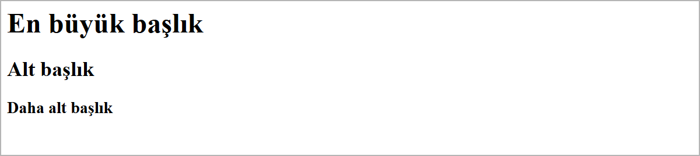
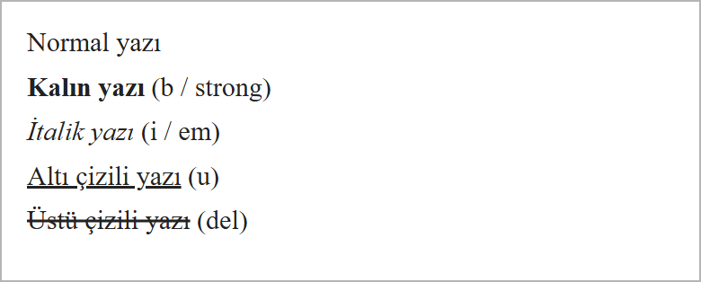
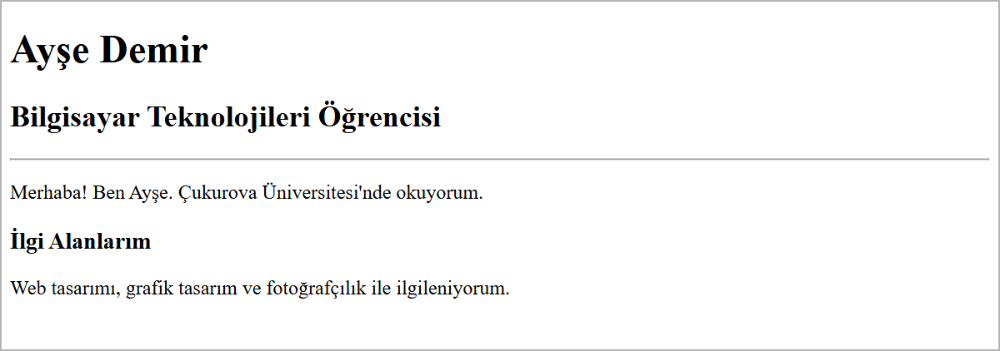

HTML İskeleti ve Metin Etiketleri
Bu sayfada
Bir HTML sayfası, etiketlerle işaretlenmiş metinden oluşur: etiketler tarayıcıya hangi yazının başlık, hangisinin paragraf olduğunu söyler. Her sayfanın aynı temel iskeleti vardır; görünmeyen bilgiler <head>, ekranda görünen içerik <body> içinde durur. 1. haftada, Araçlar ve İlk Web Sayfası konusunda yazılan "Merhaba Dünya" sayfası da bu iskelete sahiptir.
1Etiket (Tag) Mantığı
HTML, etiketlerden oluşur. Bir etiket, tarayıcıya "bu içerik bir başlıktır", "bu bir paragraftır" gibi bilgiler verir. Etiketler açılı parantez içinde yazılır:
- Açılış etiketi:
<p> - Kapanış etiketi:
</p>(kapanışta/işareti bulunur) - İçerik: ikisinin arasına yazılır.
<p>Bu bir paragraftır.</p>
İki tür etiket vardır:
| Tür | Açıklama | Örnek |
|---|---|---|
| Çift (kapatılan) etiket | Açılır ve kapatılır; arasına içerik yazılır | <h1>Başlık</h1> |
| Tek (kapatılmayan) etiket | Tek başına kullanılır, kapanışı yoktur | <br>, <hr> |
HTML büyük/küçük harfe duyarlı değildir (<P> ile <p> aynı anlama gelir); ancak etiketler genellikle küçük harfle yazılır; siz de öyle yazınız. Açtığınız her çift etiketi kapatmayı unutmayınız.
2Sayfanın İskeleti
Her HTML sayfası aynı temel iskelet üzerine kurulur. Aşağıdaki dört etiket, bir sayfanın "olmazsa olmaz" parçalarıdır:
<!DOCTYPE html>
<html lang="tr">
<head>
<meta charset="utf-8">
<title>Sayfa Başlığı</title>
</head>
<body>
<!-- Görünen içerik buraya yazılır -->
</body>
</html>
| Etiket | Görevi |
|---|---|
<!DOCTYPE html> | Belgenin bir HTML5 belgesi olduğunu bildirir. Her sayfanın ilk satırıdır. |
<html> | Tüm sayfayı kapsayan en dıştaki etikettir. lang="tr" sayfanın dilinin Türkçe olduğunu belirtir. |
<head> | Sayfanın görünmeyen bilgileri (başlık, karakter seti, açıklama) burada durur. |
<body> | Sayfada görünen her şey (yazılar, başlıklar, resimler) burada yer alır. |
Kısaca: <head> sayfanın kimlik bilgisidir, <body> ise ekranda gördüğümüz kısımdır.
2.1. <head> İçinde Neler Bulunur?
<head> bölümündeki bilgiler tarayıcı sekmesinde ve arama motorlarında işe yarar; sayfanın içinde doğrudan görünmezler.
| Etiket | Görevi |
|---|---|
<title> | Tarayıcı sekmesinde görünen başlık. |
<meta charset="utf-8"> | Türkçe karakterlerin doğru görünmesini sağlar. |
<meta name="description" content="..."> | Sayfanın kısa açıklaması (arama motorları için). |
<meta name="keywords" content="..."> | Sayfayla ilgili anahtar kelimeler (günümüzde arama motorlarının çoğu dikkate almaz). |
<meta name="author" content="..."> | Sayfayı hazırlayan kişi. |
<meta name="viewport" ...> etiketi de <head> içinde yer alır ve sayfanın telefonda düzgün görünmesini sağlar. Bu etiketi 12. hafta (Responsive Tasarım) konusunda ayrıntılı göreceğiz.
3Başlık Etiketleri: <h1>–<h6>
Başlıklar, metni bölümlere ayırmak için kullanılır. Altı düzey vardır: <h1> en büyük ve en önemli başlık, <h6> en küçüğüdür.
<h1>En büyük başlık</h1> <h2>Alt başlık</h2> <h3>Daha alt başlık</h3>
Tarayıcı bu başlıkları, numarası büyüdükçe (<h1>'den <h6>'ya doğru) daha küçük yazı ile gösterir:

Başlıklar yalnızca yazıyı büyütmek için değil, sayfayı anlamlı bölümlere ayırmak için kullanılır. Bir sayfada genellikle tek bir <h1> bulunur (ana başlık); alt bölümler <h2>, onların da alt bölümleri <h3> ile devam eder.
Yazıyı büyütmek veya küçültmek amacıyla başlık etiketi kullanmayınız. Boyut ve görünüm ayarları 6. haftada, CSS'e Giriş konusunda, CSS ile yapılacaktır. Başlık etiketi yalnızca "burası bir başlıktır" anlamı taşır.
4Paragraf, Satır Kesme ve Yatay Çizgi
4.1. Paragraf: <p>
Metin blokları <p> etiketi ile yazılır. Tarayıcı her paragrafın öncesine ve sonrasına boşluk bırakır.
<p>Bu birinci paragraftır.</p> <p>Bu ikinci paragraftır.</p>
Tarayıcı, kodda arka arkaya bıraktığınız birden fazla boşluğu tek boşluk sayar; Enter ile yaptığınız satır atlamayı da bir boşluk sayar. Yani metni koddaki gibi alt satıra geçirmek için Enter'a basmanız yetmez; satır ve paragrafları aşağıdaki etiketlerle oluşturmanız gerekir.
4.2. Satır Kesme: <br>
Aynı paragraf içinde bir alt satıra geçmek için <br> kullanılır. Tek (kapanışsız) bir etikettir.
<p>Birinci satır<br>İkinci satır</p>
4.3. Yatay Çizgi: <hr>
<hr>, sayfaya yatay bir çizgi çizer ve genellikle konu değişimini belirtmek için kullanılır. O da tek (kapanışsız) bir etikettir.
<p>Giriş bölümü...</p> <hr> <p>Yeni bölüm...</p>
5Metin Biçimlendirme Etiketleri
Metnin bir kısmını vurgulamak için aşağıdaki etiketler kullanılır:
| Etiket | Görevi | Örnek |
|---|---|---|
<b> / <strong> | Kalın yazı | <b>önemli</b> |
<i> / <em> | İtalik (eğik) yazı | <i>terim</i> |
<u> | Altı çizili yazı | <u>altı çizili</u> |
<del> | Üstü çizili yazı | <del>eski fiyat</del> |
Tarayıcıdaki görünümleri şöyledir:

<b> ile <strong> her ikisi de yazıyı kalın gösterir; aradaki fark, <strong> etiketinin aynı zamanda "bu metin önemlidir" anlamını taşımasıdır. Aynı ilişki <i> ile <em> arasında da vardır. Bu derste ikisini de kalın/eğik yapmak için kullanabilirsiniz.
6Yorum Satırı: <!-- -->
Yorumlar, kodun içine yazdığınız ama tarayıcıda görünmeyen notlardır. Kendinize hatırlatma bırakmak veya bir kod parçasını geçici olarak devre dışı bırakmak için kullanılır.
<!-- Bu bir yorumdur, tarayıcıda görünmez --> <p>Bu paragraf görünür.</p>
7Örnek: Kendini Tanıtan Sayfa
Şimdi bu haftanın etiketlerini kullanarak kendini tanıtan bir sayfa hazırlayalım. VS Code'da web_sitem klasöründe index.html dosyasını açın ve şunu yazın:
<!DOCTYPE html>
<html lang="tr">
<head>
<meta charset="utf-8">
<title>Hakkımda</title>
</head>
<body>
<h1>Ayşe Demir</h1>
<h2>Bilgisayar Teknolojileri Öğrencisi</h2>
<hr>
<p>Merhaba! Ben Ayşe. Çukurova Üniversitesi'nde okuyorum.</p>
<h3>İlgi Alanlarım</h3>
<p>Web tasarımı, grafik tasarım ve fotoğrafçılık ile ilgileniyorum.</p>
<!-- İletişim bilgileri ileride eklenecek -->
</body>
</html>
Kaydedip (Ctrl + S) Go Live ile açtığınızda tarayıcıda şu sonucu görürsünüz:

<!-- İletişim bilgileri ileride eklenecek --> satırı bir yorum olduğu için sayfada görünmez.
8Sıkça Yapılan 5 Hata
| Hata | Sonuç | Çözüm |
|---|---|---|
Çift etiketi kapatmamak (<b> var, </b> yok) | Sonraki bütün yazılar kalın görünür | Her çift etiketi kapatınız |
<br> ve <hr> için kapanış aramak (</br>) | Fazladan boş bir satır oluşur | Bunlar tek etikettir, kapanışları yoktur |
| Alt satıra geçmek için kodda Enter'a basmak | Tarayıcı satırı atlamaz | Satır için <br>, paragraf için <p> kullanınız |
Yazıyı büyütmek için <h1> kullanmak | Anlam bozulur | Başlık yalnızca başlık için; boyut CSS ile ayarlanır |
| İç içe etiketleri yanlış sırada kapatmak | Tarayıcı çoğu zaman kendisi düzeltir; ama kod karışır ve hata bulmak zorlaşır | En son açılan etiketi en önce kapatınız |
9Bu Haftanın Özeti
- HTML etiketlerden oluşur: çift etiketler açılıp kapatılır (
<p></p>), tek etiketler kapatılmaz (<br>,<hr>). - Sayfa iskeleti:
<!DOCTYPE html>,<html>,<head>(görünmeyen bilgiler) ve<body>(görünen içerik). - Başlıklar
<h1>–<h6>;<h1>en büyük ve en önemlidir, yalnızca başlık amacıyla kullanılır (boyut için değil). - Metin etiketleri:
<p>paragraf,<br>satır kesme,<hr>yatay çizgi. Tarayıcı koddaki fazladan boşlukları tek boşluğa indirir, Enter'ı da boşluk sayar. - Biçimlendirme:
<b>/<strong>kalın,<i>/<em>italik,<u>altı çizili,<del>üstü çizili. <!-- -->yorum satırıdır; tarayıcıda görünmez.
10Konu Sonu Testi
-
Bir HTML sayfasında görünen içerik hangi etiketin içine yazılır?
- a)
<head> - b)
<title> - c)
<body> - d)
<meta>
Cevabı göster
cGörünen içerik<body>içine yazılır;<head>görünmeyen bilgileri tutar. - a)
-
Aşağıdakilerden hangisi tek (kapanışsız) bir etikettir?
- a)
<p> - b)
<h2> - c)
<br> - d)
<title>
Cevabı göster
c<br>tek etikettir, kapanışı yoktur;<p>,<h2>,<title>çift etikettir. - a)
-
<!-- ... -->etiketi ne işe yarar?- a) Başlık oluşturur
- b) Tarayıcıda görünmeyen yorum ekler
- c) Yatay çizgi çizer
- d) Yazıyı kalın yapar
Cevabı göster
bYorum satırı koda not düşmek içindir ve tarayıcıda görünmez. -
Bir metni kalın göstermek için hangi etiket kullanılır?
- a)
<i> - b)
<u> - c)
<b> - d)
<hr>
Cevabı göster
c<b>(veya<strong>) yazıyı kalın gösterir. - a)
-
Kodda arka arkaya bırakılan birden fazla boşluk ve Enter için tarayıcı ne yapar?
- a) Hepsini olduğu gibi gösterir
- b) Birden fazla boşluğu tek boşluk sayar, Enter'ı da boşluk sayar
- c) Hata verir
- d) Otomatik paragraf oluşturur
Cevabı göster
bTarayıcı fazladan boşlukları tek boşluğa indirir; Enter da bir boşluk sayılır.
11Uygulamalar
Görev: En sevdiğiniz filmi tanıtan bir sayfa hazırlayınız. Bir ana başlık, bir alt başlık, yatay çizgi ile ayrılmış iki bölüm ve en az iki paragraf bulunsun. Filmin adını bir paragraf içinde kalın yazınız.
Çözüm:
<!DOCTYPE html>
<html lang="tr">
<head>
<meta charset="utf-8">
<title>En Sevdiğim Film</title>
</head>
<body>
<h1>En Sevdiğim Film</h1>
<h2>Kısa Tanıtım</h2>
<p>En sevdiğim film <b>Esaretin Bedeli</b> filmidir.</p>
<p>Umut ve dostluk üzerine etkileyici bir hikâye anlatır.</p>
<hr>
<h3>Neden Sevdim?</h3>
<p>Kurgusu ve sonu beni çok etkiledi.</p>
<!-- İstenirse buraya yönetmen bilgisi eklenebilir -->
</body>
</html>
Adımlar:
web_sitemklasöründefilm.htmladında yeni bir dosya oluşturunuz.- Yukarıdaki kodu yazıp kaydediniz (
Ctrl+S). - Go Live ile açınız ve içeriği kendi seçtiğiniz filme göre değiştiriniz.
12Sınıf Uygulaması
Senaryo: Kendinizi (veya seçtiğiniz bir konuyu) tanıtan, düzgün başlık hiyerarşisi olan tek sayfalık bir tanıtım sayfası hazırlayın.
Yapılacaklar:
web_sitemklasöründetanitim.htmladında yeni bir dosya oluşturun.- Sayfaya bir
<h1>(ad/konu) ve bir<h2>(alt başlık) ekleyin. <h2>'nin altına bir<hr>(yatay çizgi) koyun.- En az iki paragraf (
<p>) yazarak kendinizi/konuyu anlatın. - Bir
<h3>("İlgi Alanlarım" gibi) ve altına bir paragraf ekleyin. - Bir paragrafta bir kelimeyi
<b>ile kalın, başka bir kelimeyi<i>ile italik yapın. - Sayfaya bir yorum satırı (
<!-- -->) ekleyin.
Beklenen sonuç: Büyükten küçüğe başlıklar, yatay çizgiyle ayrılmış bölümler, kalın ve italik vurgular içeren düzenli bir tanıtım sayfası. Yorum satırı tarayıcıda görünmez.
İpuçları: Başlık etiketlerini yalnızca başlık için kullanın. <b>/<i> gibi etiketleri açtığınız yerde kapatmayı unutmayın.
13Notlar ve İpuçları
- Başlık düzeylerini atlamayın:
<h1>'den sonra<h3>değil,<h2>gelir. Alt bölümler sırayla bir düzey aşağı iner. - Yorum satırları sayfada görünmez; ancak tarayıcıda Sayfa kaynağını görüntüle ile herkes görebilir. Yorumlara şifre veya kişisel bilgi yazmayın.
- Anlam taşıdıkları için
<b>yerine<strong>,<i>yerine<em>tercih edilir. Bu derste ikisini de kullanabilirsiniz; ancak MDN de anlamı öne çıkaran<strong>ve<em>'i önerir.
14Çalışma Soruları
<h1>başlığının altına kendi bölümünüzü<h2>ile yazınız.- Bir paragraf yazıp içindeki bir kelimeyi
<b>ile kalın, başka bir kelimeyi<i>ile italik yapınız. - İki paragraf yazıp aralarına
<hr>ekleyiniz; çizginin nasıl göründüğüne bakınız. - Bir paragraf içinde
<br>kullanarak metni üç ayrı satıra bölünüz. - Sayfanıza bir yorum satırı (
<!-- -->) ekleyip kaydediniz; bu satırın tarayıcıda görünmediğini doğrulayınız. <h1>'den<h6>'ya kadar altı başlığı da yazıp boyutlarının nasıl küçüldüğünü gözlemleyiniz.
Kaynakça
- MDN: Basic HTML syntax (İngilizce)
- MDN: Headings and paragraphs (İngilizce)
- MDN: Emphasis and importance (İngilizce)
Bu haftanın Sınıf Uygulaması sayfanın sonundadır. Önce konu anlatımını okuyun, sonra uygulamayı kendi bilgisayarınızda yapın.